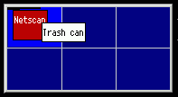

PageMage is initially disabled. To turn it on, go to the "Features" page in the "XWorkplace Setup" object and check the respective box. This requires that the XWorkplace PM hook also be installed.
PageMage is a virtual desktop utility for OS/2. Essentially, it allows the user to work on several desktops at once. Your screen is considered one out of several, and you can switch between these. This effectively multiplies your working area since windows can reside outside your currently visible desktop and still be switched to simply by switching to another desktop.

Traditionally, most virtual desktop programs show a representation of the overall desktop in a window, highlighting the current desktop. The standard mechanism for switching desktops has been to click (with a mouse) on one of the other desktops, which would remove the current desktop's windows and display the new desktop's windows.
PageMage can be configured in the new "Screen" settings object, where XWorkplace inserts several pages.
There are still some bugs in PageMage. Some have always been in there, and some
are due to the integration into XWorkplace.